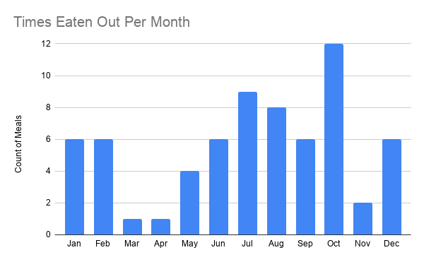
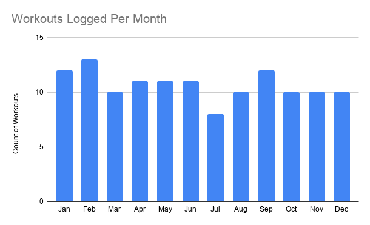
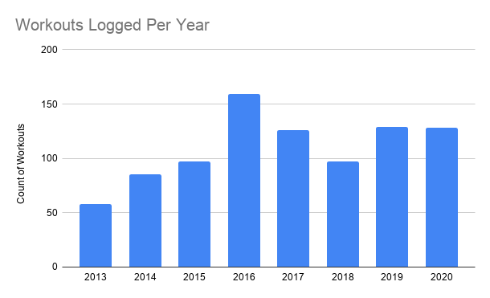
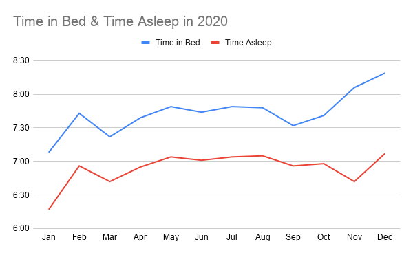

Another year down, but 2020 isn’t just “another year”. While every year has its memorable moments, 2020 was a year nobody will forget. Those enough who are fortunate enough to see it come to a close will forever be changed from what transpired this year.
Looking Back
COVID-19
COVID-19 is a tragedy at a macroscopic scale unlike anything I’ve experienced in my 32 years. At the time of this writing, we in the US are experiencing “a 9/11 a day” a few days each week. Beyond the sheer volume of death, there’s universal stressors as people weigh relative risks of potentially dying or killing loved ones versus having creature comforts or seeing relatives during the holidays. Never before did I think I’d have to decide between seeing my parents/giving them a chance to see their new grand baby, or not seeing them/keeping them as safe as possible. This is the kind of choice that everyone from everywhere is having to make right now. It’s a tough time for humanity.
But.
With every cloud there is a silver lining. There is no such thing as growth without pain. When the status quo is rocked to its core, we are given an opportunity to invent the new future. We can take constraints and turn them into strengths.
The family Zoom chat may not be as personal as getting together around a dinner table and laughing together, but it has shown that the trip isn’t 100% necessary. Any night of the week can become a family gathering night, and maybe we can have them more often. Maybe separately, we can laugh together more often than we ever did before.
We have an untold number of working professionals who were finally given an opportunity to work from home, and a great proportion of those came to realize: this is great! A huge number of companies have already realized that employees working from home is not only possible, but actually cheaper and better for the company. Businesses are learning that face-to-face meetings really aren’t required as often as they were being held. We will have fewer business trips and more time spent at home with the family. Fewer commuters and faster roads for those who still do. The globe will be better off by those who are no longer commuting.
Luckiest
I have been the luckiest person alive ever since I was born. 2020 has just further cemented that fact. I’d like to say this is an instance of “the harder I work, the luckier I get”, because I have worked hard, but in reality it was all just dumb luck.
My family and my immediate relatives avoided the plague.
The social impacts of COVID just drove behavioral changes in everyone that I would typically default to anyways, given the choice.
Second-Time Parents
Melissa and I had a baby boy a couple months ago. Our lives have grown forever richer and we’ll get the honor of getting to see two little boys grow up to become whatever kind of man they want to be.
At Home Living
This pandemic hit shortly after we decided to become a single-income family. It hit right when we began to cement in some super great habits. We have a home gym with everything I ever need. We have a fully stocked kitchen with all the accessories I could ever want (+a few more).
We have a child who is at an age that’s at an age where school isn’t a concern. We got to spend maximum amounts of time with him in some of what have to be the cutest months. We had another child. Despite a shaky first couple of hours, has always grown into a healthy and huge little dude!
Working From Home
I do it all the time now. I mean that quite literally. I am one of those few lucky people who work better from my home office than the cube I used to sit in. My job works better from there. Therefore that is where I am working for the foreseeable future. And it’s everything I every thought it would be.
Fewer Cars
I have no commute. I don’t really have a need to have two cars. We sold one of our cars. Also, with the rise of shopping subscription services and grocery delivery, there’s even less need to drive. We are a one car family now. Been that way for months. Regretted it zero times.
New Tech
I switched from Android to the iPhone back in late 2018, but THIS was the year I really went all in on Apple. I got myself an iPad, Apple Pencil, and Apple Watch. I’m stuck well into the Walled Garden at this point. The only thing stopping me from spending Christmas money on a set of AirPods is fear of hypocrisy (being a self-proclaimed “less, but better” minimalist type). The iPad has become my favorite device I own. I’m moving more and more of the duties my computer used to fill over to the iPad. Maybe someday I won’t need a separate computer at all. If my desktop did kick the bucket today, I’d replace it with a Mac Mini.
Systems
Melissa and I both went HAM in developing systems around the house for ourselves and our kids to be more effective and in control of everything we do. We cut the fat. We are living cleaner and more frugally, while also enjoying a better day-to-day living experience than we had before.
Melissa in particular has been Wonder Woman throughout the whole year. She’s an inspiration and genuinely leads me to being a better person by example every day.
Streaks
Special shout out to the iOS App Streaks for being such a powerful agent of lasting, meaningful personal changes for both Melissa and I.
Notion
Extra special shout out to the app Notion, which has played an ever-increasing role in our lives. Example: this Column draft is being written in Notion on my phone right now.
Working Out
This year I met my goal to “not go 3 days in a row without a workout” almost completely 1. I got leaner than ever before, while also being near the strongest I’ve ever been. See the Top 5 for more.
Other Great Things
There are other great things I choose not to write about. Because not everything needs to be shared. K&D. J&K.
Looking Forward
In 2021 I have relatively modest goals. Mostly I want to continue the good trajectory we have been on. Be a bit more intentional, a lot less multifocused, and less stressed out about things I can’t control and things that don’t make a difference. I want to take the good life changes that COVID forced into everyone and keep those that have suited us well. I want to continue to save and spend lots of time with the family.
Top 5: Quantified Results of 2020 & Goals for 2021
5. Times Eaten Out - 68

We ate out 68 times in 2020. This includes grabbing dinners, lunches, out, or having them delivered - but not leftovers.
In 2021, I’d like to get that number down even further to a once/week average.
Additional note: 2020 was the year I decided to stop tracking my calories & macros. So those data don’t exist for 2020.
4. Named Workouts - 128

I worked out 128 times in 2020. A heavy majority of these workout sessions are from my rotating compound barbell lift program. But also yoga and basketball (from before COVID). This does not include things like mowing, or riding an exercise bike while working. These are named workouts.

In 2021, I’d like to boost this number to 156 workouts (aka “3 per week”), which I’ve only managed to achieve once in the past 8 years. As such, I’m changing my Streaks app goal from “Once every 3 days” to “3 Days/Week”
3. Sleep - Many Metrics
In 2020, I spent 7.7 hours in bed on average, but only 6.9 hours asleep. On an “Average” night I slept from 11:08 PM to 6:53 AM. Note how the gap between the lines in the chart expands right after my second child was born. Kids.

Data recorded with an Oura Ring2
Another important metric here is the standard deviation of those numbers. My bedtime had a standard deviation of 45 minutes. This means, for those of us who weren’t in statistics recently, that 68% of my bedtimes fell between 11:08 PM ± 45 minutes (10:23 PM and 11:53 PM), and 95% of my bedtimes fell within 2σ (9:38 PM & 12:38 PM).
For 2021, I’m going to be realistic and say that my ability to control my sleep will continue to be restricted. At least I’d like to see that “time asleep” metric go above 7 hours/day.
2. Creative Consumption
In 2020…
- I started 27 books and finished 25 of them.
- I watched 46 movies, only 2 of which were in a theater.
- I recorded 149 videogames sessions, which were (roughly) 25 minutes on average.
- I watched television 94 times, typically only an episode at a time, but some of those times included multiple episode binges.
In 2021, I’d like those numbers to be…
- 26 books finished
- 52 movies, at least 26 of them being new to me
- 52 videogames sessions
- 52 television sessions
1. Creative Output
In 2020 I created…
- 18 Columns on this website
- 14 Gillespedia articles
- 36 Creations of the Week (missing zero weeks)
- 514 Unique, Interlinked, Atomic Notes
- 104 Guitar Practice sessions
- 26 Episodes of my We Scene a Movie podcast
In 2021, I’d like those numbers to be…
- 18 Columns
- 18 Gillespedia articles
- 52 CotWs
- 150 New Notes
- 250 Guitar Practice Sessions
- 26 More Podcasts
So, basically just ‘keep it up’.
Quote:
In the anals of history Guy1
Footnotes
-
I slipped during illness, injury, when my kid was born, and once this week away from my gym. ↩
-
Pro tip: use their online data visualizer and click “Download Data” to get an Excel-friendly format. ↩